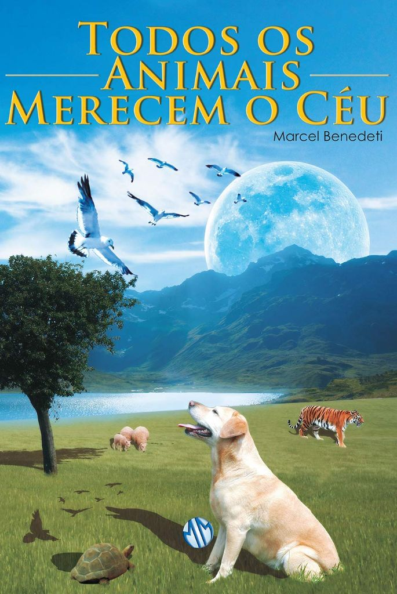
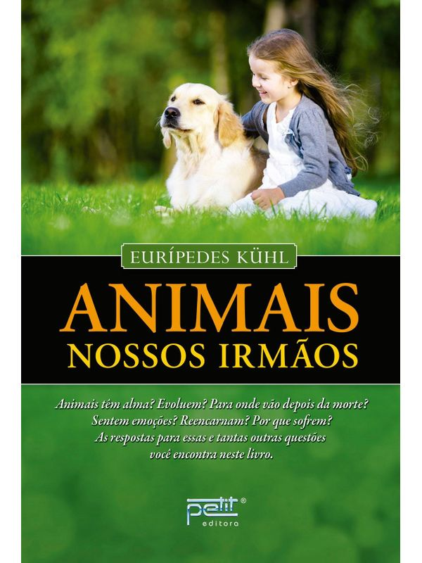

Livros inspiradores que vão transformar sua conexão espiritual com seu animal de estimação

Narrativa romanceada. Conta como o autor "conheceu" seus benfeitores espirituais e como o guiaram para escrever as obras e um pouco de sua biografia. A história é baseada em desdobramentos do Dr. Guilherme, médico veterinário, que visita a colônia Rancho Alegre. João, seu auxiliar semianalfabeto, em outra encarnação foi um dos fundadores dessa colônia. Guilherme começa a se interessar pela espiritualidade e, junto com sua noiva Cláudia, começam a estudar o Espiritismo. Fala sobre a eutanásia, a reencarnação dos animais, a vida dos animais na dimensão espiritual e o sofrimento como meio de aprendizado e evolução. Relata passagens que contam pormenores do regresso dos animais para a dimensão espiritual na ocasião da desencarnação e detalhes sobre os mecanismos de retorno à dimensão física nos momentos que antecedem o nascimento, incluindo desde a preparação do novo corpo ao parto. Inclui temas como a existência de colônias que cuidam dos animais na espiritualidade e comenta sobre os trabalhos das equipes espirituais que se ocupam com eles.
Saiba MaisTodos os animais são nossos amigos? Quais são os mais evoluídos? Os animais reencarnam? Essas e muitas outras dúvidas encontrarão respostas neste trabalho, que discute o lado sensível desses nossos companheiros de existência terrestre. Tal como nós, eles vieram para aprender e progredir. Perguntas recebidas no programa "Nossos Irmãos Animais" da Rádio Boa Nova, com comentários do autor e trechos de obras espíritas.
Saiba Mais
Qual o destino dos animais depois da morte? Eles têm alma? Como é a vida animal na espiritualidade? Os animais reencarnam? Por que alguns sofrem tanto enquanto outros levam uma existência repleta de regalias? Como é a vida animal em outros planetas? Eurípedes Kühl – médium, palestrante e escritor espírita renomado – apresenta a edição comemorativa de vinte anos, revista e ampliada, onde responde a essas e muitas outras perguntas sobre a natureza, a origem e a existência espiritual dos animais.
Saiba MaisO LIVRO QUE INSPIROU O FILME! "Esta história vivaz e emocionante encantará a todos os apaixonados por cachorros." ― Booklist. Esta é a inesquecível história de um cão que, após renascer várias vezes, imagina que haja uma razão para seu retorno, um propósito a cumprir e que, enquanto não o alcançar, continuará renascendo. Narrado pelo próprio animal, Quatro vidas de um cachorro aborda a questão mais básica da vida: por que estamos aqui? Emocionante e com boas doses de humor, este é um livro para todas as idades, que mostra o olhar de um cão sobre o relacionamento entre as pessoas e os laços eternos entre os seres humanos e seus animais. Se você gostou de Marley & eu, vai adorar esta aventura que agora ganha as telas do cinema.
Saiba MaisCom a mente de um cientista e a compaixão de um amante dos animais, o biólogo de renome mundial, Rupert Sheldrake, apresenta uma exploração inovadora do comportamento animal. Ela mudará profundamente nossa percepção sobre os animais – e sobre nós mesmos. Quando um telefone toca, como os gatos sabem se é o seu dono ou não? Como os cães sabem quando seus donos estão voltando para casa em horários inesperados? Como os cavalos podem encontrar o caminho de volta ao estábulo em um terreno completamente desconhecido? Após anos de extensa pesquisa, envolvendo milhares de pessoas que têm animais de estimação ou trabalham diretamente com animais, o autor prova, conclusivamente, o que muitos tutores já sabem: há uma forte conexão entre humanos e animais que desafia a compreensão científica atual. Suas ideias provocativas sobre os campos de conexão – campos mórficos, explicam o comportamento estranho frequentemente observado em animais de estimação. Também nos ajudam a entender o incrível comportamento animal na selva, como migração e homing (capacidade dos animais em retornar para seus territórios de origem). Cães sabem quando seus donos estão chegando não só fornece uma visão fascinante do comportamento animal e humano, mas também ensina a questionar os limites do pensamento científico convencional. Mostra como os próprios animais estão mais próximos de nós e trazem valiosos ensinamentos sobre biologia, natureza e consciência.
Saiba Mais